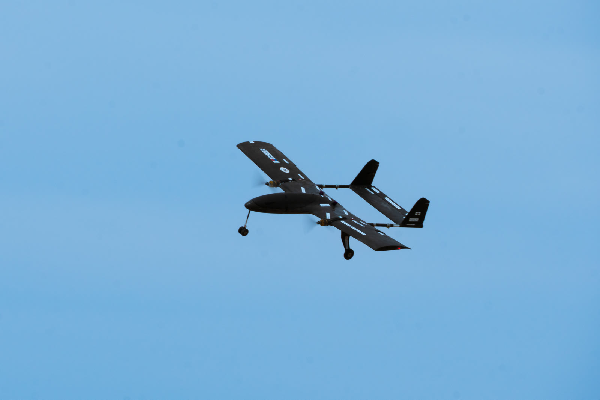
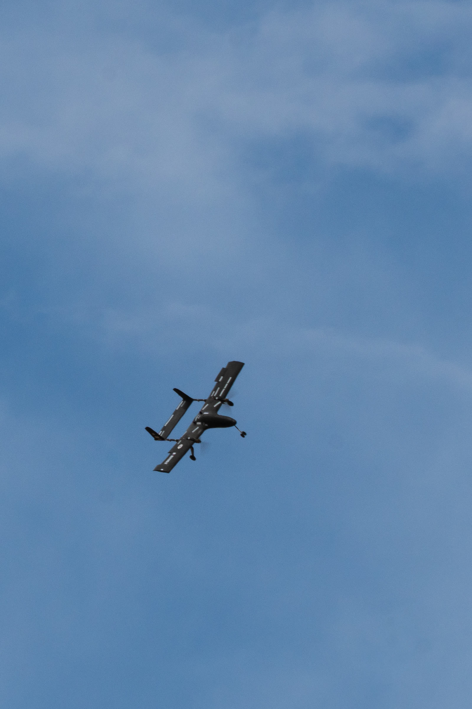
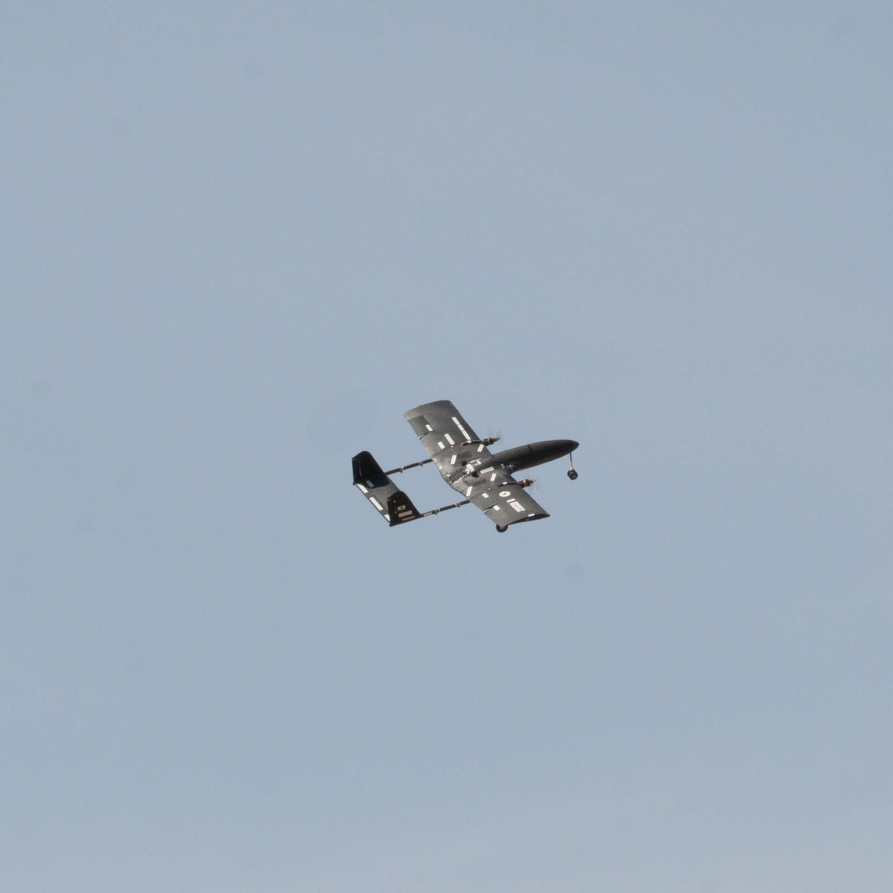
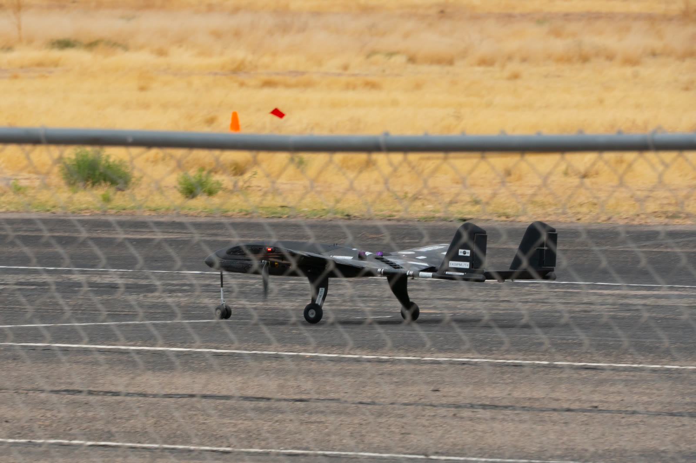
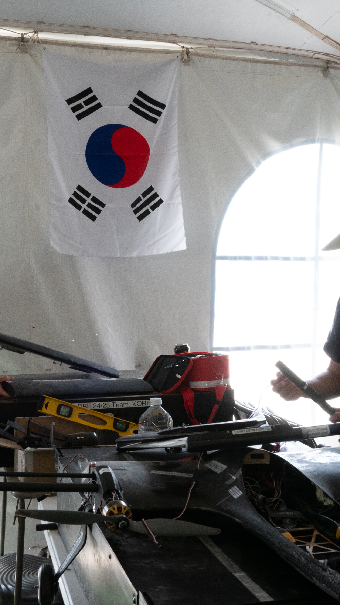
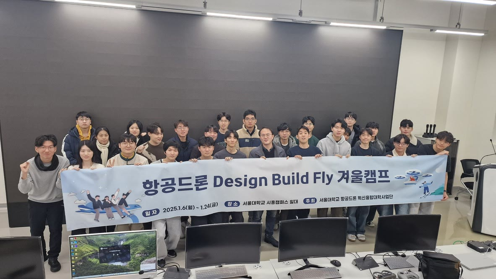

2025 AIAA Design/Build/Fly
CFD team leadership · Team Korea
December 2024–April 2025 · Seoul, Korea & Tucson, USA
I served as CFD Team Leader for Team Korea in the 2025 AIAA Design/Build/Fly competition. My responsibilities included airfoil selection and analysis of flight characteristics, using Python scripts to automate analysis with the Ansys Fluid API. I also conducted fluid–structure interaction analysis with Ansys Mechanical.

The aircraft and mission
Team Korea brought together students from Seoul National University, Gyeongsang National University, and Konkuk University. The team developed Beomgorae, a twin-motor carrier aircraft, and Gaori, a flying-wing X-1 test vehicle, for the competition’s flight and ground missions.
The design balanced payload capacity, flight speed, endurance, and the ability to carry and release the X-1 glider. The main aircraft used a low wing and a twin-boom H-tail. Aerodynamic analysis supported decisions about the wing geometry, airfoil, and mission configurations.
My contribution
My role focused on the analysis that informed the aircraft design:
- CFD team leadership: led the team’s CFD work on aerodynamic performance and flight characteristics.
- Airfoil selection: evaluated candidate airfoils against lift and efficiency requirements.
- Automated analysis: used Python and the Ansys Fluid API to support repeated aerodynamic analyses across aircraft configurations.
- Fluid–structure interaction: used Ansys Mechanical to evaluate structural response to aerodynamic loading.
The aircraft, glider, manufacturing, and flight demonstrations were a wider team effort. The analysis figures below are extracted from Team Korea’s final report, which lists me on the aircraft analysis team in Section 2.1 (page 5).
Airfoil selection
The report describes screening 1,648 airfoils from the UIUC database using XFLR5 at a Reynolds number of 700,000 and Mach 0.1. The selection considered lift capability and lift-to-drag ratio at the operating angles of attack.
The comparison below shows the symmetric S9027 alongside the cambered SG6043 and E216. SG6043 and E216 were retained for further sizing because they better met the lift and efficiency requirements. The final aircraft used E216.

Source: Figure 4.3, final report, page 18.
CFD and aerodynamic performance
Configuration comparisons
The team used Ansys Fluent to evaluate the aircraft’s aerodynamic characteristics across mission configurations. The report describes a k–omega turbulence model, polyhedral meshing, and a Python script for running multiple configurations. The freestream velocity in the reported setup was 34 m/s.
The fuel tank, X-1 glider, and release hardware changed the external geometry, so the configurations were analyzed separately. The streamlines show how the surrounding flow changes with the added hardware.

Source: Figure 4.23, final report, page 31.

Source: Figure 4.24, final report, page 31.
The report identifies stall at approximately 12.5° in both analyzed configurations. The Mission 2 and 3 configurations produced slightly lower lift and higher drag than Mission 1, illustrating the aerodynamic cost of the additional mission hardware.
Checking the sizing model
Team Korea’s FORCAST sizing tool combined rapid lifting-surface analysis with a fuselage drag correction derived from Fluent. The comparison below checks its lift and drag predictions against Fluent for the same geometry.

Source: Figure 4.8, final report, page 21.
The models followed similar trends within the reported operating range of −3° to 10°. The report also identifies a limit of the rapid vortex-lattice model: it cannot predict stall, making the Fluent comparison useful near the edge of the operating envelope.
From aerodynamic loads to structural response
The structural analysis mapped Fluent pressure distributions onto the aircraft structure. The report considered an extreme load case up to 10g, assuming a linear elastic response without buckling, and examined stresses in the wing, fuselage, empennage, and internal supports.

Source: Figures 5.10–5.13, final report, page 38.
The report’s stress summary gives 85.48 MPa for the fuselage and main-wing composite surfaces and 14.91 MPa for the inner supports. These are simulation results under the stated assumptions. The report notes that physical testing remains necessary to account for manufacturing imperfections and fiber alignment.
Select any analysis figure to view it at full resolution.
Flight and separation demonstrations
The uploaded videos document the team’s aircraft in flight and the glider separation demonstration.
Aircraft and team gallery





Report and credits
The aircraft design and demonstrations are the work of Team Korea. The technical figures and analysis summaries on this page come from Team Korea’s 2024–2025 AIAA Design/Build/Fly final report. My contribution focused on CFD leadership, airfoil selection, aerodynamic analysis, and fluid–structure interaction.